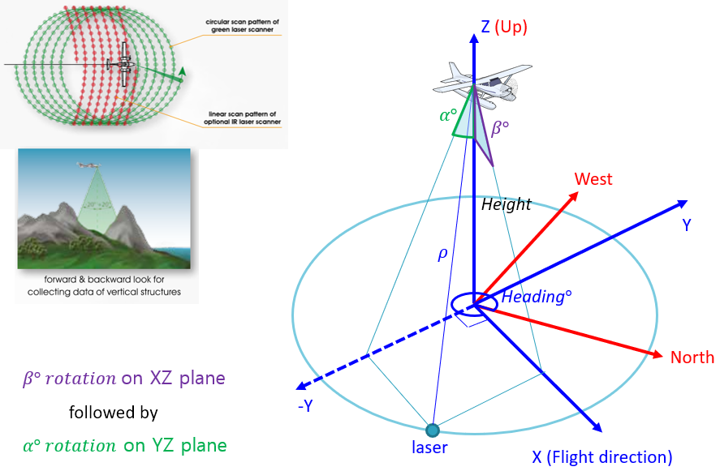

Subaerial module¶
-
class
Subaerial.Subaerial(D)[source]¶ -
-
calc_aer_pos(coeffs, a_est, b_est, aer_pos_pre)[source]¶ calculates the final cBLUE subearial position
This method calculates the final cBLUE subaerial position by adding a polynomial-surface modelled error term
Parameters: - coeffs –
- a_est –
- b_est –
- aer_pos_pre –
Returns:
-
calc_aer_pos_err(aer_pos)[source]¶ calculates the difference between the las and cBLUE positions
This method calculates the differences between the x, y, and z components of the final cBLUE positions and the corresponding las file positions.
Parameters: aer_pos – Returns:
-
calc_aer_pos_pre(rho_est, a_est, b_est, w_est)[source]¶ calculates the inital cBLUE aubaerial position
This method calculates the inital cBLUE subaerial position using the ‘lambdified’ geolocation equation without the polynomial-surface error terms.
Parameters: - rho_est –
- a_est –
- b_est –
- w_est –
Returns:
-
calc_diff(subaer_pos_pre)[source]¶ calculate the difference between the las position and the initial cBLUE position
This method calculates the difference between the x, y, and z components of the positions in the las file and the respective cBLUE-calculated position components. Ideally, a cBLUE-calculated position would identically match the corresponding position in the las file, but due to differences between the proprietary manufacturer sensor model and the sensor model used by cBLUE, the positions are not identical. The differences calculated by this method are used in the polynomial-surface error modeling process to correct for the errors caused by the sensor model discrepancies.
Parameters: subaer_pos_pre – Returns:
-
calc_poly_surf_coeffs(a_est, b_est, dx, dy, dz, itv=10)[source]¶ estimates error model using polynomial surface fitting
This method calculates the coefficients of the polynomial-surface error model intended to account for the positional errors resulting from differences between the sensor model implemented in cBLUE and the unknown, proprietary manufacturer sensor model.
The original Matlab research code used a ‘fit’ function with a ‘poly23’ option, which is emulated here by using np.linalg.lstsq with terms for a, b, a^2, ab, b^2, a^2b, ab^2, and b^3
Parameters: - a_est –
- b_est –
- dx –
- dy –
- dz –
- itv –
Returns: list[tuple, tuple, tuple] TODO: verify
-
calc_subaerial_tpu()[source]¶ calculates the subaerial uncertainty
This method calculates the subaerial uncertainty through four major steps:
- Evaluate the preliminary geolocation equation
- First, a preliminary position for each data point is calculated using the preliminary geolocation equation (i.e., the one without the polynomial-surface error terms). The preliminary positions are not expected to match the corresponding positions in the las file because the sensor model implemented in cBLUE is only an approximation of the unknown, proprietary manufacturer sensor model.
- Calculate and apply the polynomial-surface error coefficients
- Second, the position errors resulting from the differences between the sensor model implemented in cBLUE and the unknown, proprietary manufacturer sensor model are accounted for with polynomial-surface error modeling. The coefficients of the error model are calculated using a least squares calculation intended to be equivalent to Matlab’s fit(poly23) function, which was used in the original Matlab research code.
- Evaluate the Jacobian
- Third, the Jacobian of the modified laser geolocation equation, (i.e., the one with the polynomial-surface error terms)
- Propagate Uncertainty
Returns:
-
calc_trig_terms(a_est, b_est, r0, p0, h0, x0, y0, z0)[source]¶ evaluates the trigonometric terms in the Jocobian
This method aims to simplify evaluation of the Jacobian by pre-evaluating the trigonometic terms of the Jacobian. The reasoning is that this speeds up the computations because the trigonometric terms are only evaluated once, instead of every time they show up in the Jacobian.
Parameters: - a_est –
- b_est –
- r0 –
- p0 –
- h0 –
- x0 –
- y0 –
- z0 –
Returns:
-
define_obseration_equation()[source]¶ define the lidar geolocation observation equation
The lidar geolocation equation used by cBLUE is shown below:
TODO: add latex
Returns: (sympy object, sympy object, sympy object, function)
-
estimate_rho_a_b_w()[source]¶ calculates estimates for rho, alpha, and beta
This method calculates the estimated values for rho, alpha, and beta, which are the lidar range, angle in the YZ plane, and angle in the XZ plane, respectively (see the following image).
Alpha and beta are used to model the scan pattern, as a substitute for the actual, unknown, proprietary scan pattern model implemented by the manufacturer. Polynomial-surface error modeling is used to account for the positional differences resulting from the difference between the cBLUE scan model and the manufacturer scan model.
Returns: (list[], list[], list[], list[])
-
eval_jacobian(rho_est, a_est, b_est, coeffs)[source]¶ evaluate the Jacobian of the laser geolocation equation
This method evaluates the Jacobian by passing the relevant parameters to the lambdified functions representing the x, y, and z components of the Jacobian.
To simplify the computations, the trigonometric terms are pre-evaluated and are represented by the following variables: sa = sin(a0) sb = sin(b0) sw = sin(w0) sr = sin(r0) sp = sin(p0) sh = sin(h0) ca = cos(a0) cb = cos(b0) cw = cos(w0) cr = cos(r0) cp = cos(p0) ch = cos(h0)
Parameters: - rho_est –
- a_est –
- b_est –
- coeffs –
Returns:
-
form_jacobian(F1, F2, F3)[source]¶ generate the jacobian of the specified geolocation equation
This method generates the Jacobian (i.e., the matrix of partial derivatives with respect to component variables) of the specified geoloation equation using the sympy symbolic math package. Using sympy to symbolically calculate the Jacobian simplifies the coding of what would otherwise be very long equations.
Parameters: - F1 –
- F2 –
- F3 –
Returns: (function, function, function)
-
lambdify_jacobian(J1, J2, J3, eval_type='numexpr')[source]¶ turn the symbolical Jacobian into a function for faster computation
This method “lambdifies” (or “functionizes”) the Jacobian components, for faster calculations. Part of this lambdify process includes simplifying the numerous trigonometric calculations of the Jacobian by defining the Jacobian functions to be functions of the sines and cosines of the various parameters, instead of the parameters directly.
Reference: https://docs.sympy.org/latest/modules/utilities/lambdify.html
Parameters: - J1 –
- J2 –
- J3 –
- eval_type –
Returns: (function, function, function)
-
propogate_uncertainty(pJ1, pJ2, pJ3)[source]¶ propogates the subaerial uncertatinty
This method propogates the uncertainty of the component uncertainties using the following equation:
TODO: insert latex
Parameters: - pJ1 –
- pJ2 –
- pJ3 –
Returns: (ndarray, ndarray)
-
static
set_rotation_matrix_airplane()[source]¶ define rotation matrix for airplane
This method first generates the airplane rotation matrix, R, using symbolic calculations. The symbolic components of the matrix R are then “functionized”, or “lambdified”, for faster processing (because symbolic calculations are relatively slow). The components of R are functionized separately from the general observation equation, which includes R, M (the sensor rotation matrix), and polynomial-surface- correction terms, because R is later used to estimate parameters describing the assumed scan pattern, which is an approximation of the manufacturer’s proprietary scan pattern.
Returns: Matrix Returns: List[lambdify functions]
-
static
set_rotation_matrix_scanning_sensor()[source]¶ define the lidar sensor rotation matrix
This method generates the rotation matrix associated with the scanning sensor. The variables a, b, and w describe the assumed scan pattern, which is an approximation of the manufacturer’s proprietary scan pattern.
a: the rotation in the YZ plane b: the rotation in the XZ plane w: ?
Return Matrix M: the scanning sensor rotation matrix
-